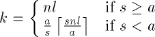
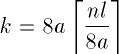

![[Front]](images/OpenGL3.gif)
![[Reference]](../buttons/ReferenceOff.gif)
![[Imp. Guide]](../buttons/ImpGuideOff.gif)
![[Index]](../buttons/IndexOff.gif) glPixelStoref, glPixelStorei: set pixel storage modes.
glPixelStoref, glPixelStorei: set pixel storage modes.
C Specification |
Parameters |
Description |
Notes |
Errors |
Associated Gets |
See Also
void glPixelStoref(
GLenum pname,
GLfloat param)
void glPixelStorei(
GLenum pname,
GLint param)
- pname
- Specifies the symbolic name of the parameter to be set. Six values affect
the packing of pixel data into memory: GL_PACK_SWAP_BYTES,
GL_PACK_LSB_FIRST, GL_PACK_ROW_LENGTH,
GL_PACK_SKIP_PIXELS, GL_PACK_SKIP_ROWS,
and GL_PACK_ALIGNMENT. Six more affect the unpacking of
pixel data from memory:
GL_UNPACK_SWAP_BYTES, GL_UNPACK_LSB_FIRST,
GL_UNPACK_ROW_LENGTH,
GL_UNPACK_SKIP_PIXELS,
GL_UNPACK_SKIP_ROWS, and
GL_UNPACK_ALIGNMENT.
- param
- Specifies the value that pname is set to.
glPixelStore sets pixel storage modes that affect the operation of
subsequent glDrawPixels and glReadPixels as well as the unpacking of
polygon stipple patterns (see glPolygonStipple), bitmaps (see glBitmap), and texture patterns (see glTexImage1D, glTexImage2D, glTexSubImage1D, and glTexSubImage2D).
pname is a symbolic constant indicating the parameter to be
set, and param is the new value. Six of the twelve storage
parameters affect how pixel data is returned to client memory, and are
therefore significant only for glReadPixels commands. They are as
follows:
- GL_PACK_SWAP_BYTES
- If true, byte ordering for multibyte color components, depth components,
color indices, or stencil indices is reversed. That is, if a four-byte
component consists of bytes b0, b1,
b2, b3, it is stored in memory as
b3, b2, b1,
b0 if GL_PACK_SWAP_BYTES is true.
GL_PACK_SWAP_BYTES has no effect on the memory order of
components within a pixel, only on the order of bytes within components or
indices. For example, the three components of a GL_RGB
format pixel are always stored with red first, green second, and blue
third, regardless of the value of GL_PACK_SWAP_BYTES.
- GL_PACK_LSB_FIRST
- If true, bits are ordered within a byte from least significant to most
significant; otherwise, the first bit in each byte is the most significant
one. This parameter is significant for bitmap data only.
- GL_PACK_ROW_LENGTH
- If greater than 0, GL_PACK_ROW_LENGTH defines the number
of pixels in a row. If the first pixel of a row is placed at location
p in memory, then the location of the first pixel of
the next row is obtained by skipping

components or indices, where n is the number of components or
indices in a pixel, l is the number of pixels in a row
(GL_PACK_ROW_LENGTH if it is greater than 0, the
width argument to the pixel routine otherwise), a is the
value of GL_PACK_ALIGNMENT, and s is the size, in
bytes, of a single component (if a<s, then it is as if
a=s). In the case of 1-bit values, the location of the next
row is obtained by skipping

components or indices.
The word component in this description refers to the
nonindex values red, green, blue, alpha, and depth. Storage format
GL_RGB, for example, has three components per pixel: first
red, then green, and finally blue.
- GL_PACK_SKIP_PIXELS and GL_PACK_SKIP_ROWS
- These values are provided as a convenience to the programmer;
they provide no functionality that cannot be duplicated simply by
incrementing the pointer passed to glReadPixels. Setting
GL_PACK_SKIP_PIXELS to i is equivalent to
incrementing the pointer by in components or indices, where
n is the number of components or indices in each pixel. Setting
GL_PACK_SKIP_ROWS to j is equivalent to
incrementing the pointer by jk components or indices, where
k is the number of components or indices per row, as just computed
in the GL_PACK_ROW_LENGTH section.
- GL_PACK_ALIGNMENT
- Specifies the alignment requirements for the start of each pixel row in
memory. The allowable values are 1 (byte-alignment), 2 (rows aligned to
even-numbered bytes), 4 (word-alignment), and 8 (rows start on double-word
boundaries).
The other six of the twelve storage parameters affect how pixel data is read
from client memory. These values are significant for glDrawPixels, glTexImage1D, glTexImage2D, glTexSubImage1D, glTexSubImage2D, glBitmap, and glPolygonStipple. They are as
follows:
- GL_UNPACK_SWAP_BYTES
- If true, byte ordering for multibyte color components, depth components,
color indices, or stencil indices is reversed. That is, if a four-byte
component consists of bytes b0, b1,
b2, b3, it is taken from memory as
b3, b2, b1,
b0 if GL_UNPACK_SWAP_BYTES is true.
GL_UNPACK_SWAP_BYTES has no effect on the memory order of
components within a pixel, only on the order of bytes within components or
indices. For example, the three components of a GL_RGB
format pixel are always stored with red first, green second, and blue
third, regardless of the value of GL_UNPACK_SWAP_BYTES.
- GL_UNPACK_LSB_FIRST
- If true, bits are ordered within a byte from least significant to most
significant; otherwise, the first bit in each byte is the most significant
one. This is relevant only for bitmap data.
- GL_UNPACK_ROW_LENGTH
- If greater than 0, GL_UNPACK_ROW_LENGTH defines the number
of pixels in a row. If the first pixel of a row is placed at location
p in memory, then the location of the first pixel of
the next row is obtained by skipping
components or indices, where n is the number of components or
indices in a pixel, l is the number of pixels in a row
(GL_UNPACK_ROW_LENGTH if it is greater than 0, the
width argument to the pixel routine otherwise), a is the
value of GL_UNPACK_ALIGNMENT, and s is the size, in
bytes, of a single component (if a<s, then it is as if
a=s). In the case of 1-bit values, the location of the next
row is obtained by skipping
components or indices.
The word component in this description refers to the
nonindex values red, green, blue, alpha, and depth. Storage format
GL_RGB, for example, has three components per pixel: first
red, then green, and finally blue.
- GL_UNPACK_SKIP_PIXELS and
GL_UNPACK_SKIP_ROWS
- These values are provided as a convenience to the programmer; they provide
no functionality that cannot be duplicated by incrementing the pointer
passed to glDrawPixels, glTexImage1D, glTexImage2D, glTexSubImage1D, glTexSubImage2D, glBitmap, or glPolygonStipple. Setting
GL_UNPACK_SKIP_PIXELS to i is equivalent to
incrementing the pointer by in components or indices, where
n is the number of components or indices in each pixel. Setting
GL_UNPACK_SKIP_ROWS to j is equivalent to
incrementing the pointer by jk components or indices, where
k is the number of components or indices per row, as just computed
in the GL_UNPACK_ROW_LENGTH section.
- GL_UNPACK_ALIGNMENT
- Specifies the alignment requirements for the start of each pixel row in
memory. The allowable values are 1 (byte-alignment), 2 (rows aligned to
even-numbered bytes), 4 (word-alignment), and 8 (rows start on double-word
boundaries).
The following table gives the type, initial value, and range of valid values
for each storage parameter that can be set with glPixelStore.
| pname |
Type |
Initial Value |
Valid Range |
|---|
| GL_PACK_SWAP_BYTES |
boolean |
false |
true or false |
| GL_PACK_LSB_FIRST |
boolean |
false |
true or false |
| GL_PACK_ROW_LENGTH |
integer |
0 |
[0, ) ) |
| GL_PACK_SKIP_ROWS |
integer |
0 |
[0,) |
| GL_PACK_SKIP_PIXELS |
integer |
0 |
[0,) |
| GL_PACK_ALIGNMENT |
integer |
4 |
1, 2, 4, or 8 |
|
| GL_UNPACK_SWAP_BYTES |
boolean |
false |
true or false |
| GL_UNPACK_LSB_FIRST |
boolean |
false |
true or false |
| GL_UNPACK_ROW_LENGTH |
integer |
0 |
[0,) |
| GL_UNPACK_SKIP_ROWS |
integer |
0 |
[0,) |
| GL_UNPACK_SKIP_PIXELS |
integer |
0 |
[0,) |
| GL_UNPACK_ALIGNMENT |
integer |
4 |
1, 2, 4, or 8 |
glPixelStoref can be used to set any pixel store parameter. If the
parameter type is boolean, then if param is 0, the parameter
is false; otherwise it is set to true. If pname is a integer
type parameter, param is rounded to the nearest integer.
Likewise, glPixelStorei can also be used to set any of the pixel
store parameters. Boolean parameters are set to false if
param is 0 and true otherwise.
The pixel storage modes in effect when glDrawPixels, glReadPixels, glTexImage1D, glTexImage2D, glTexSubImage1D, glTexSubImage2D, glBitmap, or glPolygonStipple is placed in a
display list control the interpretation of memory data. The pixel storage
modes in effect when a display list is executed are not significant.
Pixel storage modes are client state and must be pushed and restored using glPushClientAttrib and glPopClientAttrib.
- GL_INVALID_ENUM is generated if pname is
not an accepted value.
- GL_INVALID_VALUE is generated if a negative row
length, pixel skip, or row skip value is specified, or if alignment is
specified as other than 1, 2, 4, or 8.
- GL_INVALID_OPERATION is generated if glPixelStore is executed between the
execution of glBegin and the
corresponding execution of glEnd.
glGet with argument
GL_PACK_SWAP_BYTES
glGet with argument
GL_PACK_LSB_FIRST
glGet with argument
GL_PACK_ROW_LENGTH
glGet with argument
GL_PACK_SKIP_ROWS
glGet with argument
GL_PACK_SKIP_PIXELS
glGet with argument
GL_PACK_ALIGNMENT
glGet with argument
GL_UNPACK_SWAP_BYTES
glGet with argument
GL_UNPACK_LSB_FIRST
glGet with argument
GL_UNPACK_ROW_LENGTH
glGet with argument
GL_UNPACK_SKIP_ROWS
glGet with argument
GL_UNPACK_SKIP_PIXELS
glGet with argument
GL_UNPACK_ALIGNMENT
glBitmap,
glDrawPixels,
glPixelMap,
glPixelTransfer,
glPixelZoom,
glPolygonStipple,
glPushClientAttrib,
glReadPixels,
glTexImage1D,
glTexImage2D,
glTexSubImage1D,
glTexSubImage2D
![[Prev]](buttons/ArrowLeftOff.gif)
![[Next]](buttons/ArrowRightOff.gif)
![[Up]](buttons/ArrowUpOff.gif) C Specification
C Specification